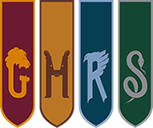
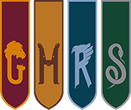

Teorias
Bichento pertencia aos Potter
Sabe aquele gatinho ruivo que Hermione comprou em Harry Potter e o Prisioneiro de Azkaban e que tirava Rony do sério? Há fortes chances de ele ter pertencido a Lilian Potter antes de sua morte. Quando o trio está no Largo Grimmauld, Harry lê uma carta escrita à mão pela mãe. No texto, ela menciona que tinha um gato e Harry se pergunta se o animal sobreviveu ao ataque de Voldemort. Nunca fica explicado onde esse gato foi parar.
Voltando a O Prisioneiro de Azkaban, o vendedor de Bichento diz a Hermione que o gato está à venda “há algum tempo” e que ninguém o quer. Ainda no mesmo livro, Bichento estranhamente reconhece Pedro (na forma de Perebas) e Sirius (na forma de cão). Sem contar que o gato sabia sobre a passagem secreta no salgueiro lutador. A teoria garante que isso acontece porque tanto Black quanto Pettigrew costumavam visitar a casa dos Potter enquanto vivos.
Draco ajudou Harry a desvendar o segredo da Câmara Secreta
No segundo livro, ao visitarem Hermione petrificada na ala hospitalar, Harry e Rony descobrem a pista mais importante para suas investigações sobre a Câmara Secreta: um pedaço de papel preso na mão da estudante em que há explicações de como um monstro tão grande como o basilisco pode estar escondido no castelo sem ser notado. Já este Tumblr aponta que, talvez, não tenha sido uma descoberta feita pela própria Hermione… e sim por Draco!
Para começar, vamos ser sinceros – existe alguém mais nerd e apaixonada por livros do que Hermione Granger? Então por que ela rasgaria a página de um livro da biblioteca da escola? A verdade é que tal atitude de vandalismo não combina muito com a personagem. No filme que adapta o livro, recebemos uma pista: a cena de Malfoy no Beco Diagonal em que ele rasga a página de um livro e a esconde no bolso. À primeira vista, parece ser uma cena sem importância, e pouca gente havia dado atenção a ela.
Seria esta a maior prova de que Draco, diferentemente do pai, nunca quis arruinar a vida de Harry? Aliás, talvez tenha sido o próprio Lucio Malfoy a fonte de informações de Draco, já que o próprio era Comensal da Morte e, provavelmente, conversava em casa sobre tudo que estava acontecendo em Hogwarts.
Os Dursley estavam sob efeito de uma Horcrux o tempo todo
Como descobrimos em Harry Potter e as Relíquias da Morte, as Horcruxes podem provocar efeitos negativos em quem as possui, causar mudanças de pensamento e influenciar seus donos, assim como ocorreu com Rony, que permaneceu com o Medalhão de Slytherin por tempo demais e acabou se estranhando com Harry e Hermione a ponto de abandoná-los durante o último livro.
Agora faça a conexão: quem se tornou uma Horcrux, por culpa de Voldemort, quando era um bebê? Sim, o Harry! E ele esteve com os Dursley por dez anos, tempo o suficiente para a sua Horcrux interior criar um efeito terrível sobre sua família adotiva.
Embora, de fato, seja uma teoria bastante inteligente, o texto causou polêmica por ser problemático e nunca foi comentado por J.K. Isso não impediu que ganhasse popularidade e fosse compartilhado milhares de vezes.
Harry seria imortal?
A teoria de Trelawney afirma que "um ou outro deverá morrer na mão um do outro, pois nenhum poderá viver enquanto o outro sobreviver". Harry assume que isso significa que, no final, ou ele mataria Voldemort, ou Voldemort mataria Harry – A teoria afirma que a única maneira que um ou outro poderia morrer estaria na mão do outro – em outras palavras, depois de matar Voldemort, Harry se tornaria imortal.
Trelawney não é uma charlatã
Em O Prisioneiro de Azkaban, a Professora Trelawney tenta adivinhar o mês do nascimento de Harry, e ela palpita que ele nasceu no meio do inverno. Harry nasceu em julho, más naquela época ele tinha um pedaço da alma de Voldemort em seu corpo. Lembrando que Voldemort nasceu no dia 31 de dezembro. MEIO DO INVERNO.
Os centauros sabiam de tudo
Claro que o encontro de Harry e Voldemort na floresta negra é importante, más algo ainda mais importante aconteceu e poucas pessoas perceberam
Se lembram da conversa que Harry teve com o centauro Firenze? Firenze é repreendido pelos outros centauros, que perguntam o quanto ele disse a Harry – a teoria afirma que os centauros sabiam o tempo todo que Harry e Voldemort acabariam lutando até a morte na floresta (como fazem em Relíquias da Morte) e, de acordo com a política deles, eles não podem fazer nada para deter isso.
Pontos merecidos
Durante o banquete de fim de ano em Harry Potter e a Pedra Filosofal, Dumbledore premia as casas com pontos para Harry, Rony e Hermione por derrotarem Voldemort com sucesso. Ele também dá 10 pontos para Neville, porque, como ele diz, "é preciso uma grande dose de coragem para enfrentar nossos inimigos, mas ainda mais para enfrentar nossos amigos".Lembrando que Dumbledore sabe exatamente quanta bravura isso demanda – porque ele teve que lutar contra seu amigo Grindelwald.